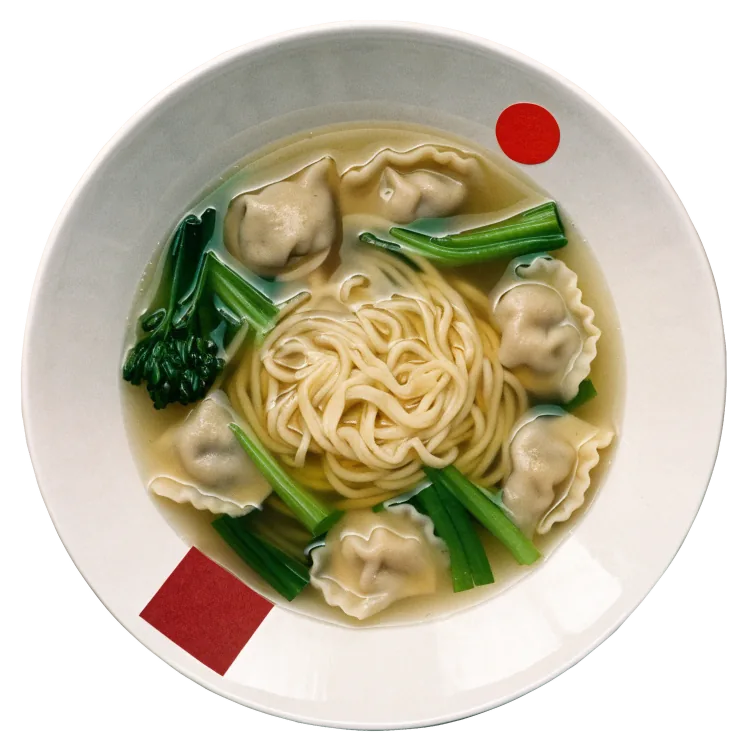

Dim Sum
- Dim Sum
- Gedämpfte Teigtaschen mit Sesam und Sojasoße
Kantonesisch mitten im Kontorhausviertel – mittags schnell, abends ganz in Ruhe.
Dim Sum, Nudelsuppen, gebratene Ente. Mittags Mo–Sa bis 16:00, abends Di–Sa ab 17:30. Burchardstraße 16, 20095 Hamburg.
Burchardstraße 16, Ecke Kontorhausviertel – das rote Schild im mittleren Fenster.
Um halb zwölf geht der Mittagstisch los, samstags um zwölf. Abends ab halb sechs liegt die ganze kantonesische Karte auf dem Tisch: Dim Sum, Ente, Nudeln, alles zum Teilen. Wer lieber zu Hause isst, nimmt mit oder lässt liefern.
Fotos von Gästen, aufgenommen an der Burchardstraße. Teller sind rund, Schaufenster eckig.


 Foto: Findus · Google Maps
Foto: Findus · Google Maps

Mittags ein Teller, der satt macht. Abends die ganze Karte, Dim Sum, Ente, Nudeln, zum Teilen in der Tischmitte.
Ein Auszug, sortiert nach Formen. Die vollständige Karte mit Preisen und der Mittagstisch liegen im Lokal aus.
Komplette Karte und Mittagstisch im Lokal oder telefonisch.Vegetarische Gerichte, Desserts, Bier und Wein gibt es auch. Alles auch zum Mitnehmen.
Anrufen · 040 336806Foto: Berlin Gal · Google Maps11:30 bis 16:00
Um halb zwölf geht der Mittagstisch los, samstags um zwölf. Gekocht wird bis 16 Uhr, auch zum Mitnehmen.
Foto: Wu Jc · Google Maps16:00 bis 17:30
Zwischen vier und halb sechs bleibt der Herd aus. Montags ist danach Feierabend, sonntags bleibt geschlossen.
Foto: Findus · Google Maps17:30 Di–Sa
Abends liegt die ganze kantonesische Karte auf dem Tisch: Dim Sum, Ente, Nudeln, alles zum Teilen. Di–Do bis 20:30, Fr und Sa bis 21:30.

So erkennen Sie unsEckhaus mit Klinkersockel und drei großen Schaufenstern, das runde rote Schild hängt im mittleren.
Mitten im Kontorhausviertel, Chilehaus und Sprinkenhof liegen um die Ecke.
 Foto: Michael Ortmann · Google Maps
Foto: Michael Ortmann · Google Maps